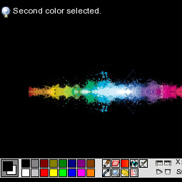

Julien Verneuil
Full Stack Developer from
Néronville
, France
CV / Resume (.pdf)
software
library
games
creative code
contributions
3D Printer Monitoring System
https://github.com/grz0zrg/fb_monitor
C
Embedded system
REST
JSON
OctoPrint
Linux Framebuffer
Collaborative Audio-Visual Tool
https://www.fsynth.com
Front-End
Back-End
DSP
HTML5
JavaScript
WebGL
WebSockets
NodeJS
MIDI
MongoDB
Redis
OT
UI/UX
Real-Time Synthesis Server
https://github.com/grz0zrg/fas
Distributed DSP server
C/C++
OSC
WebSockets
Real-Time
Sound design
Embedded system
Bitmap conversion software
https://github.com/grz0zrg/bmp2sms
Tcl/TK
Image processing
Z80
Web Spectral Synthesizer
No links yet
Front-End
HTML5
Canvas
WebAudio
UI/UX
CSS3
Digital Signal Processing
Image processing
Minimalist Build System
https://github.com/grz0zrg/pynut
Python
Anubis language
Minimalist Static Website Tool
https://github.com/grz0zrg/static
Python
JSON
Load balancing simulation
https://www.fsynth.com/lab/simulation.htm
Front-End
HTML5
CSS3
JavaScript
Window function visualizer
https://www.fsynth.com/lab/envs.html
Front-End
HTML5
Canvas
JavaScript

GP2X drawing app.
http://dl.openhandhelds.org/cgi-bin/gp2x.cgi?0,0,0,0,4,2582
C/C++
Embedded system
Digital image processing
SDL
Touchscreen
GP2X step sequencer
http://dl.openhandhelds.org/cgi-bin/gp2x.cgi?0,0,0,0,6,2829
C/C++
Embedded system
Digital Signal Processing
SDL
Touchscreen
GP2X Chip-8 Emulator
.ZIP (1.2MB) - Windows - With SRC
C/C++
Embedded system
Hardware Emulation
SDL
Opera Chip-8 Emulator Widget
.ZIP (53KB) - Opera 9+ Widget
JavaScript
Opera Widget
Hardware Emulation
Canvas
Anubis language for Atom
https://github.com/grz0zrg?utf8=%E2%9C%93&tab=repositories&q=anubis+atom&type=&language=
CoffeeScript
Atom
Anubis language
Plane deformation tool
https://www.onirom.fr/pd/index.html
ActionScript 3
 Web Spectral SynthesizerNo links yet
Web Spectral SynthesizerNo links yet